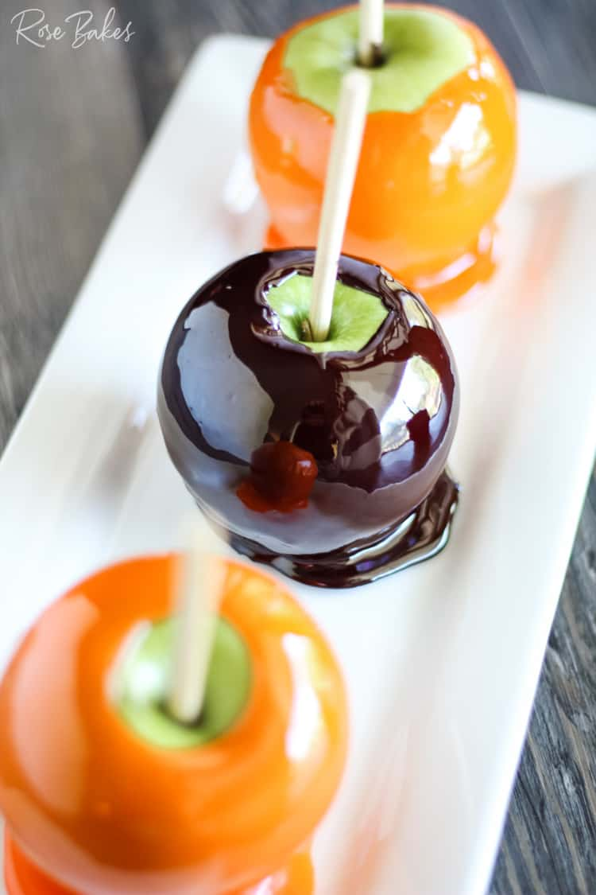

Bad Luck Bomb Apples

Description:
Indulge in the delightful simplicity of baked apples that can be prepared right in your toaster oven.
This easy and wholesome dessert is a perfect treat for any season
Enjoy the warm, comforting aroma and taste of these toaster oven baked apples,
which are bound to become a family favorite.
Ingredients:
- 2 apples
- 1-2 cinnamon sticks
- 2 tsp lemon juice
- 4 cardamom seeds
- 20g butter
- 4 tsp granulated sugar
Steps:
- Cut apples in half. Remove stem and seeds, scooping
out an indentation in the middle
- Cut cinnamon sticks to 3cm length. To prevent burning, dampen the
cut surface of the apple with water.
- Put the lemon juice, cardamom, and butter in the apple, stab with a cinnamon stick.
- Cover the surface with sugar equally. Cover the sides with aluminum foil,
leaving the cut side uncovered
- Cook in a toaster oven for 20 minutes.
Enjoy!!